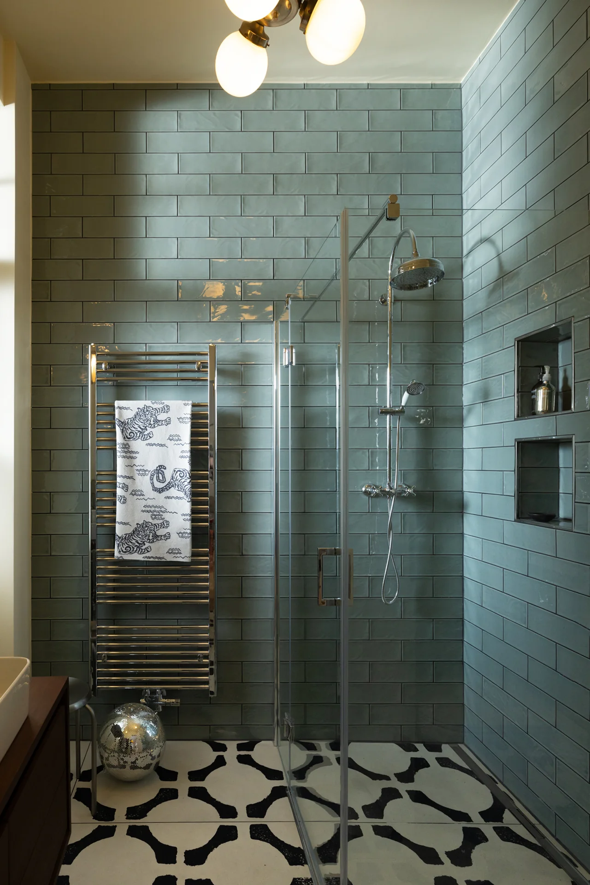
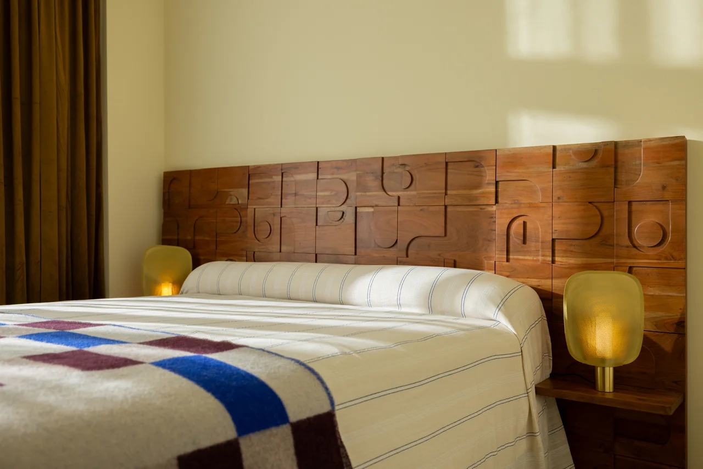
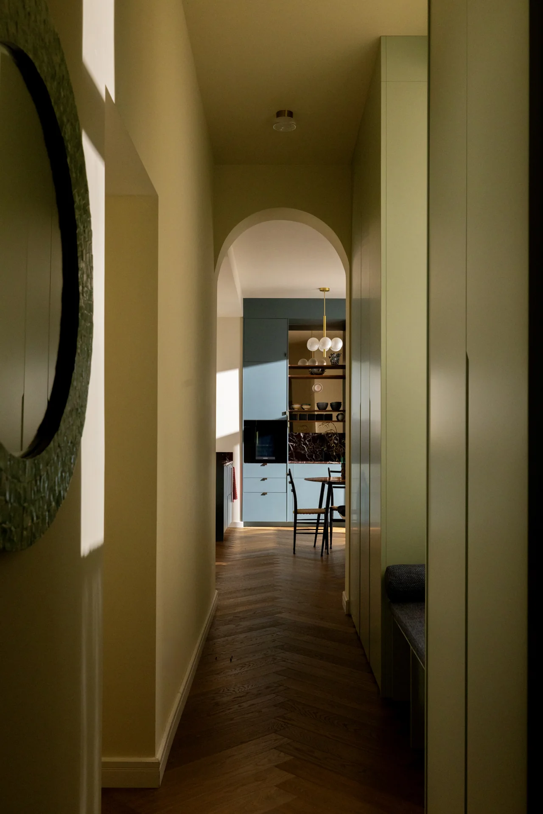
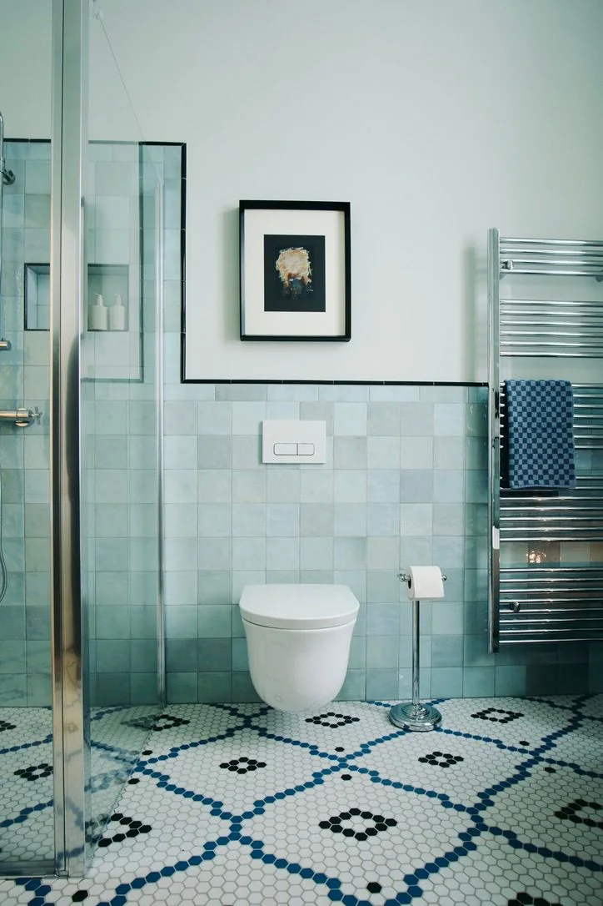
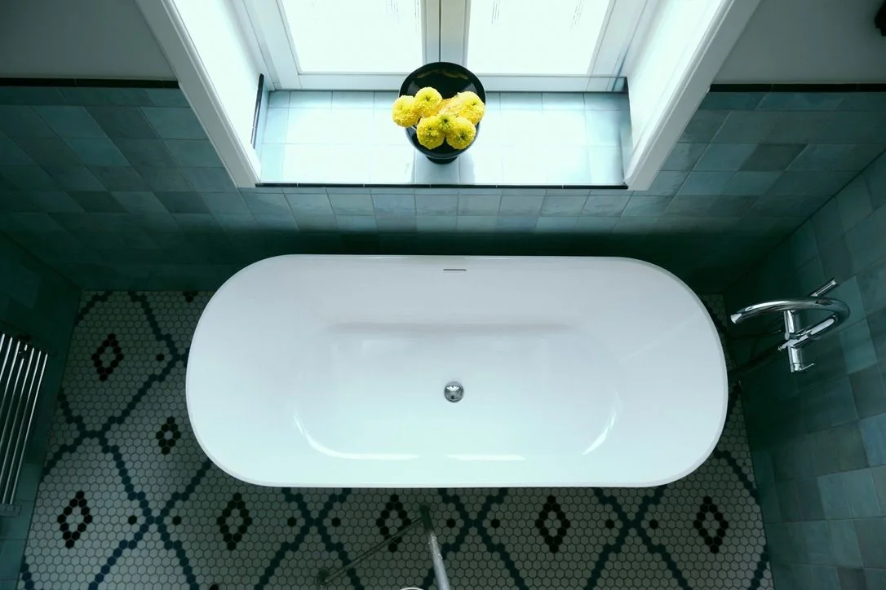
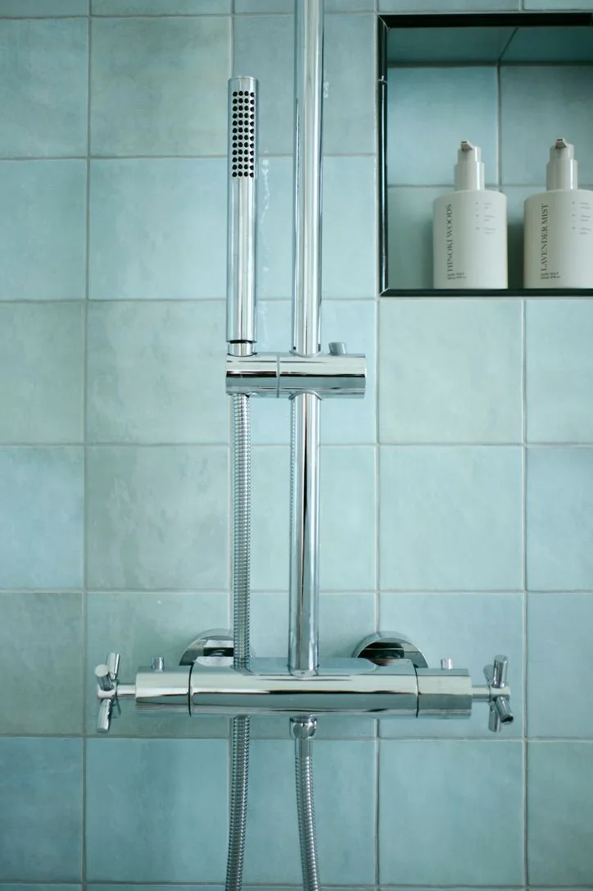
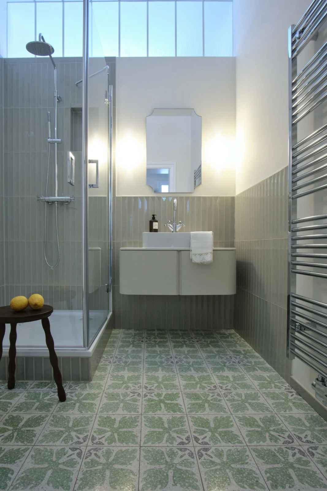
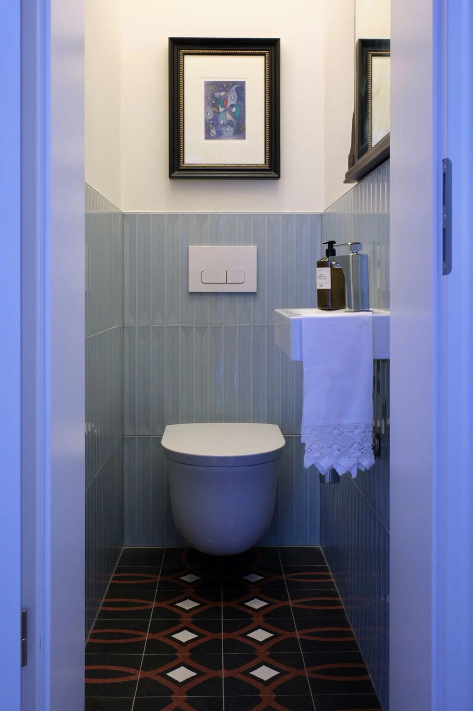
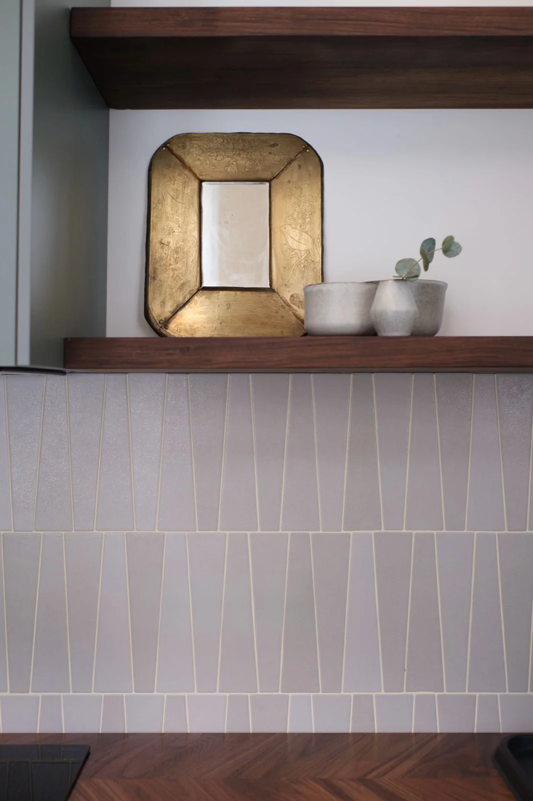

Räume. Materialien.
Details.
Eine Auswahl aus drei Projekten im Bereich Sanierung und Innenausbau. Die Bilder zeigen Wohnbereiche, Küchen und Bäder aus unterschiedlichen Perspektiven.
Böttgerstraße
Wohnräume mit Charakter: warme Materialien, hohe Türen und sorgfältig gestaltete Übergänge. Die Bildserie führt vom Wohnbereich über die Küche bis ins Bad.
6 Bilder · Zum Vergrößern auswählen







Fürstenberger
Blaue Wandfliesen, ein Waschtisch aus Holz und ein grafischer Boden prägen diese Badserie. Die Aufnahmen zeigen das Zusammenspiel von Flächen, Armaturen und Details.
4 Bilder · Zum Vergrößern auswählen






Hanauer Landstraße
Helle Räume, Parkett und ein großzügiger Rundbogendurchgang bestimmen den Wohnbereich. Ergänzt wird der Einblick in die Wohnungssanierung durch Aufnahmen aus Bad und WC.
4 Bilder · Zum Vergrößern auswählen






Zur aktuellen Vorschau: Die Bildserien sind den bereitgestellten Projektordnern zugeordnet. Angaben zu Bauzeit, konkretem KONTEC-Leistungsumfang und Bildnachweisen werden in den Projektsteckbriefen ergänzt.
Rechenzentren &
technische Infrastruktur.
Dieser Bereich bekommt eigene Referenzen, sobald die Projektinformationen und Bilder vorliegen.
Zum Bereich Rechenzentren →
Was haben Sie vor?
Sanierung, Innenausbau oder Rechenzentrum: Sprechen wir über Ihr Bauvorhaben.